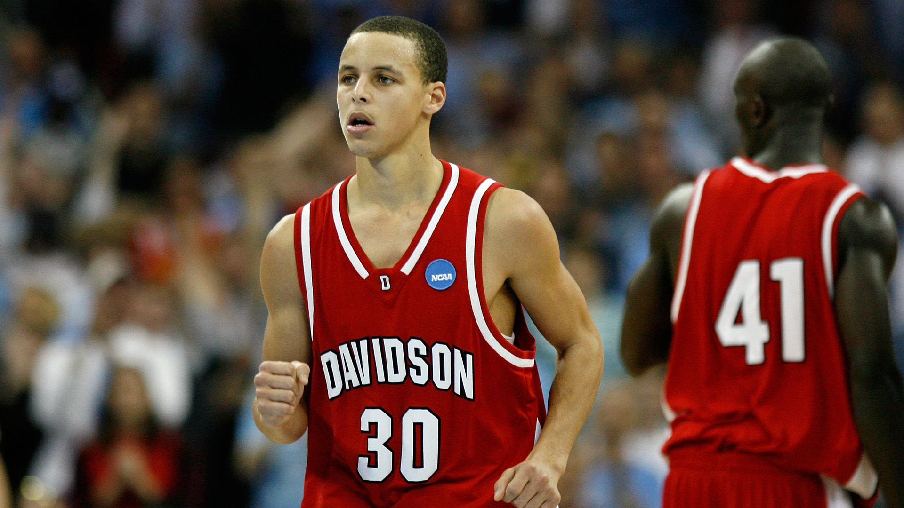
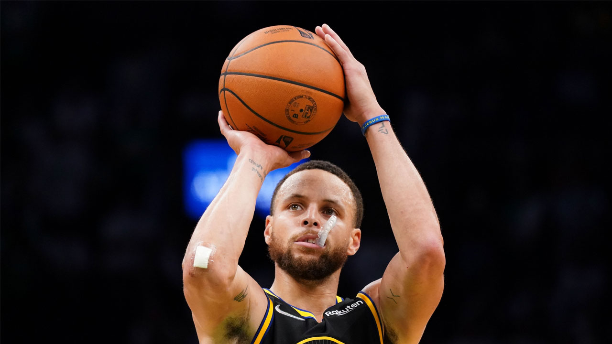
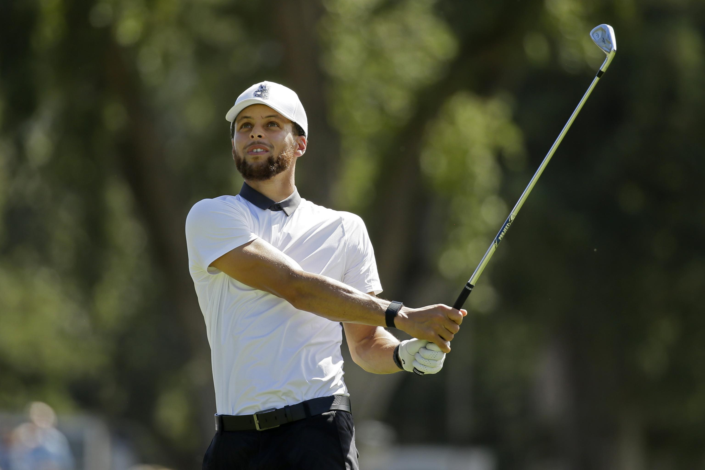
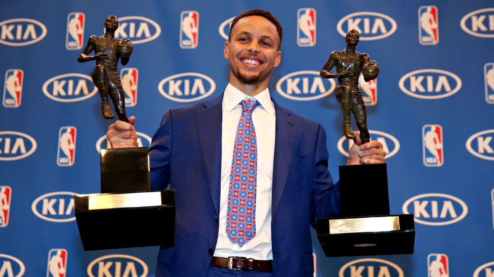

Stephen Curry adalah putra Sonya (Adams) dan Dell Curry. Ia dilahirkan di akron, Ohio sementara ayahnya adalah anggota dari Cleveland Cavaliers. Dia dibesarkan di Charlotte, North Carolina, tempat ayahnya menghabiskan sebagian besar karier NBA dengan Charlotte Hornets. Dell sering mengajak Curry dan adik laki-lakinya, Seth, ke gimnya, di mana mereka akan memotret dengan Hornets selama pemanasan. Keluarganya kemudian dipindahkan ke Toronto, yang mana Dell mengakhiri karier NBAnya sebagai anggota team Toronto Raptors. Selama waktu ini, Curry bermain untuk tim basket anak-anak Queensway Christian College, memimpin mereka ke musim yang tak terkalahkan. Dia juga anggota Toronto 5-0, tim klub yang bermain di Ontario, mengadu dia melawan sesama pemain NBA masa depan Cory Joseph dan Kelly Olynyk. Curry memimpin tim ke rekor 33-4, dalam perjalanan untuk memenangkan kejuaraan tingkat provinsi. Setelah pensiun, Dell dan keluarganya pindah kembali ke Charlotte dan Curry mendaftar di Charlotte Christian School, di mana ia dinobatkan sebagai all-conference, all-state, dan membawa timnya meraih tiga gelar konferensi dan tiga penampilan playoff negara bagian. Karena perjalanan karier ayahnya di Virginia Tech, Curry memutuskan ingin bermain basket perguruan tinggi untuk Hokies, tetapi hanya ditawari tempat tanpa diberi beasiswa, dikarenakan sebagian tubuhnya ramping dengan berat badan 160-pound. Dia akhirnya memilih untuk menghadiri Davidson College, yang telah secara agresif merekrutnya dari kelas sepuluh.
Dalam liga NBA, Stephen Curry dikenal sebagai penembak jitu terutama diluar garis 3 angka. hingga kini di musim ke-14 nya, Stephen Curry telah mencatatkan 3248 tembakan 3 angka, terbanyak di seluruh liga, dengan peringkat kedua ditempati oleh Ray Allen dengan 2973 tembakan, dan James Harden diperingkat ketiga dengan 2632 tembakan. Kehebatannya dalam melakukan tembakan jarak jauh ini telah diakui diseluruh penjuru liga, sampai-sampai Curry diberi julukan "The Greatest Shooter of All Time". Gaya bermainnya yang mengandalkan keahlian menembak 3 angka ini akhirnya merubah gaya bermain seluruh liga NBA, dimana kini tembakan 3 angka menjadi senjata utama dari banyak tim-tim di NBA, berbeda dengan NBA pada era 90 hingga 2000an yang lebih banyak mengandalkan fisik dan tinggi pemain untuk mencetak angka dibawah ring
Selain bermain basket, Curry juga memiliki kegemaran dalam olahraga golf. ketika offseason NBA, Stephen Curry sering terlihat bermain golf bersama teman-teman dan kerabatnya. Curry juga sering datang untuk melihat berbagai turnamen golf baik skala turnamen junior hingga turnamen berskala nasional.
Pada musim 2015-2016 Stephen Curry dinobatkan sebagai MVP, namun yang membuatnya lebih spesial ialah dia mendapat gelar "Unanimous MVP" pertama dalam sejarah liga basket terbesar di Amerika Serikat ini. Unianimous sendiri berarti Curry berhasil mendapat 100 vote peringkat 1 MVP NBA dari 100 media yang melakukan voting. Artinya seluruh media yang melakukan voting memilih Curry sebagai MVP NBA pada tahun tersebut. rekor terdekat sebelumnya dipegang oleh Shaqquile O'Neal pada musim 1999-2000 dan Lebron pada musim 2012-2013, dengan masing-masing mendapat 120 vote peringkat 1 dari 121 voters yang melakukan voting.
